3장. 수 표현과 선형 양자화의 원리
한눈에 보는 Linear / Nonlinear 양자화 가지치기 지도
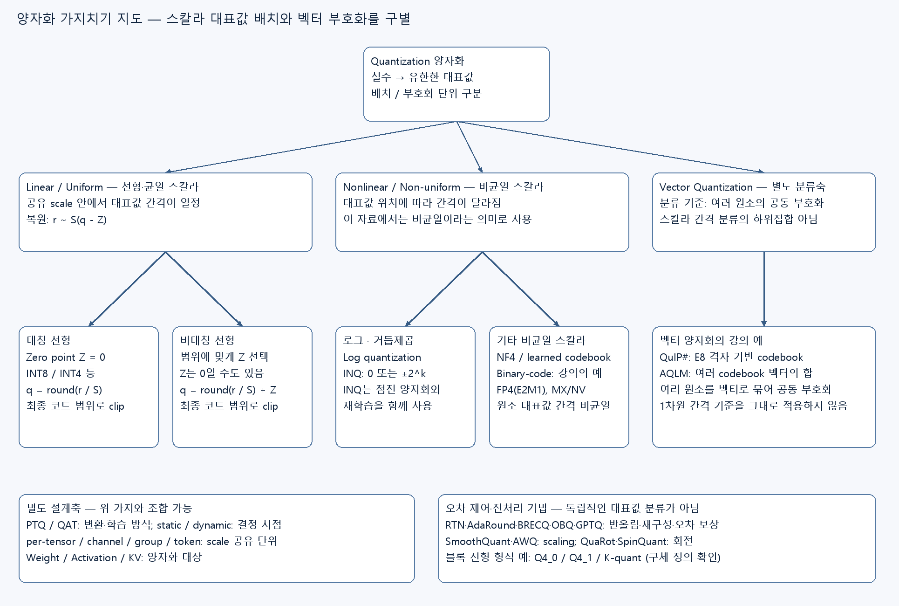
분류 기준: 이 그림의 Linear는 공유 scale 안에서 대표값 간격이 일정한 uniform/affine 양자화, Nonlinear는 대표값 간격이 달라지는 non-uniform 양자화를 뜻한다. 신경망의 비선형 활성함수 분류와는 다르다. 아래 지도는 강의에서 다룬 대표 기법을 정리한 것이며 모든 양자화 방법을 망라한 목록은 아니다.
| 가지 | 대표 기법·표현 | 핵심 차이 | 본문 연결 |
|---|---|---|---|
| 선형·대칭 | Z=0인 INT8·INT4 affine 표현 | 실수 0을 코드 0으로 표현 | 이 장 3.7–3.8 |
| 선형·비대칭 | 범위에 따라 Z를 선택하는 affine 표현 | 치우친 범위를 활용; Z가 0일 수도 있음 | 이 장 3.7–3.8 |
| 비균일·로그 | Log quantization, INQ의 거듭제곱 값 | 0 또는 ±2^k 등 비균일 대표값 | 이 장 3.6, 4장 4.3 |
| 비균일·스칼라 | NF4, 학습 codebook, binary-code 조합, FP4 | 원소마다 비균일 대표값·조합값 선택 | 이 장 3.4, 4장 4.2–4.3 |
| 벡터 단위의 별도 분류 | QuIP#, AQLM | 여러 값을 공동 codeword로 표현; 스칼라 간격 기준과 구별 | 4장 4.4 |
다른 분류축과 구별하기: PTQ/QAT는 변환·학습 방식이고, per-channel/group은 scale 공유 단위다. GPTQ·AWQ·SmoothQuant·QuaRot 등은 오차 제어나 사전 변환 기법이며, 그 이름만으로 대표값이 선형인지 비균일인지 정해지는 것은 아니다. FP4는 지수 때문에 원소 대표값 간격이 일정하지 않으며 MXFP4·NVFP4는 FP4 원소에 블록 scale을 결합한 표현이다. VQ는 벡터 단위의 별도 분류축이므로 Non-uniform의 엄밀한 하위집합으로 두지 않았다. 특히 E8 격자에는 1차원 대표값 간격 기준을 그대로 적용하지 않는다. Binary-code 조합도 계수 선택에 따라 균일해질 수 있으며, 여기서는 4장의 비균일 예제를 가리킨다.
원본 범위: PDF p.24–38. 원본의 개념을 설명하는 부분은 강의 해설, 이해를 돕는 추가 예제는 교육용 보충, 잘못 읽기 쉬운 식·수치는 정정·주의로 구별한다. 그림은 원본 PDF의 본문 영역 Crop이다.
3.1 학습 목표와 선수 개념
이 장을 마치면 비트 수를 줄일 때 무엇이 손실되는지 설명하고, scale과 zero point를 직접 계산해 양자화·복원할 수 있어야 한다. 또한 “4비트 모델”의 파일 크기와 실제 정수 연산의 속도가 서로 다른 문제임을 구별할 수 있어야 한다.
선수 개념은 1장의 가중치(weight: 학습으로 정해지는 모델 계수), 활성값(activation: 입력에 따라 달라지는 중간 계산값), 메모리 대역폭, 2장의 **실행 커널(kernel: 장치에서 특정 연산을 수행하는 구현)**이다. 행렬곱은 여러 곱셈 결과를 더하는 내적의 모음으로 이해하면 된다.
3.2 양자화는 무엇을 줄이는가 — p.24–25
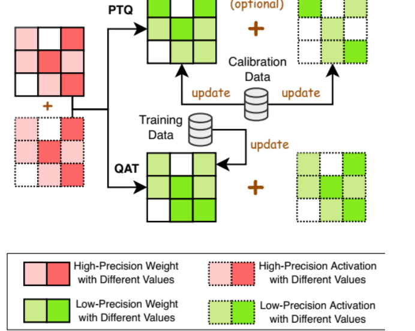
p.24 읽는 포인트: 이 페이지는 장 구분 페이지다. 아래 압축 지도에서 같은 모델 구조를 두고 숫자 표현을 바꾸는 양자화의 위치를 확인한다. 연결 자체를 제거하는 pruning과 구분한다.
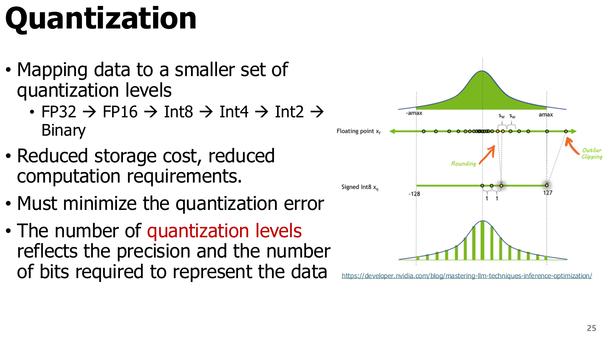
강의 해설: Quantization(양자화)은 연속적이거나 매우 촘촘한 실수 표현을 더 적은 수의 대표값으로 대응시키는 과정이다. b비트는 최대 2^b개의 비트 패턴을 구별할 수 있다. INT8은 256개, 4비트는 16개 패턴이다. 부동소수점 형식은 특수값·중복된 0 등으로 인해 모든 패턴이 서로 다른 유한 실수를 뜻하지는 않는다.
그림에서 원래 분포의 값들이 몇 개의 수직선으로 모이는 모습을 본다. 값이 많고 대표값이 적을수록 여러 실수가 같은 값으로 표현된다. 따라서 보통 저장량과 메모리 전송량을 줄이는 대신 복원 오차가 생긴다. 적절한 커널과 장치가 있으면 저정밀 연산의 처리량도 높일 수 있다.
교육용 보충: 가중치가 N개이고 각각 b비트라면 순수 가중치 payload는 N×b/8바이트다. 예를 들어 10억 개의 FP16 가중치는 2 GB, INT4 payload는 0.5 GB다(여기서 GB는 10^9바이트). 실제 파일에는 scale, zero point, codebook, 텐서 정렬·헤더 등이 붙는다. 실행 중에는 KV cache와 작업 버퍼도 추가된다.
정정·주의: 원문의 FP32 → FP16 → INT8 → INT4 → INT2 → Binary는 비트 축소 방향을 보여주는 예다. 모든 모델을 이 순서대로 변환해야 하거나, 각 단계가 같은 비용·정확도를 갖는다는 뜻은 아니다. FP16은 부동소수점이고 INT8은 보통 scale을 따로 갖는 정수 표현이다.
3.3 수 표현: 범위와 정밀도를 분리해 이해하기 — p.26
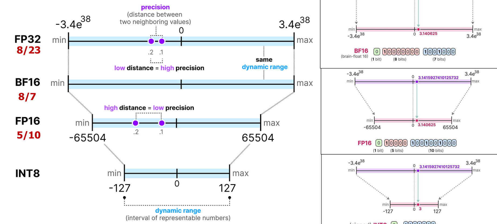
p.26 읽는 포인트: 왼쪽의 지수부·가수부 비트 수와 오른쪽의 표현 간격을 함께 본다. 비트 수가 같아도 작은 값과 큰 값을 얼마나 넓게 표현하는지, 특정 크기 주변을 얼마나 촘촘히 표현하는지는 다르다.
| 용어 | 정의 | 양자화에서의 의미 |
|---|---|---|
| Sign, 부호 | 양수·음수를 구분하는 비트 | 양·음의 가중치 표현 |
| Exponent, 지수부 | 대략적인 크기를 2의 거듭제곱으로 정하는 부분 | 넓은 동적 범위를 표현 |
| Mantissa/Fraction, 가수부 | 같은 지수 범위 안에서 값을 세분하는 부분 | 가까운 두 수를 구별하는 정밀도 |
| Dynamic range, 동적 범위 | 표현 가능한 작은 크기와 큰 크기의 범위 | 큰 outlier와 작은 값을 함께 담을 수 있는가 |
| Precision, 정밀도 | 가까운 수를 구별하는 정도 | 범위가 넓다고 정밀도까지 높은 것은 아님 |
| Outlier, 이상치 | 다른 값보다 유난히 큰 절댓값을 갖는 값 | 공통 scale을 크게 만들어 보통 값의 정밀도를 악화시킬 수 있음 |
| 형식 | 총비트 | 부호/지수/가수 | 특징과 주의 |
|---|---|---|---|
| FP32 | 32 | 1/8/23 | 범위와 정밀도가 높지만 저장·전송 비용 큼 |
| FP16 | 16 | 1/5/10 | BF16보다 촘촘하지만 유한값 범위가 좁음. 최대 유한값 65,504 |
| BF16 | 16 | 1/8/7 | FP32와 같은 지수 비트 수, FP16보다 적은 가수 비트 |
| INT8 | 8 | 부동소수점 지수·가수 구분 없음 | signed 범위는 보통 −128~127. 실제 실수 범위는 scale·zero point로 결정 |
교육용 보충: 부동소수점은 크기가 커질수록 인접 표현값의 절대 간격이 커진다. 선형 정수 양자화는 하나의 scale을 공유하는 구간에서 실수 간격이 일정하다. 따라서 FP8·FP4를 “작은 INT8·INT4”로 읽으면 안 된다.
3.4 Microscaling과 FP4 — p.27–28
3.4.1 MXFP4: 작은 원소와 공유 scale
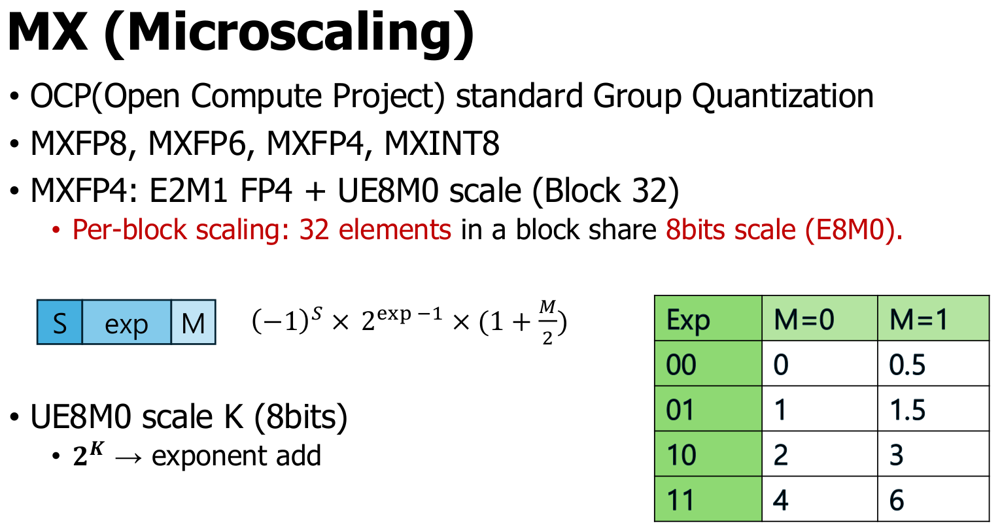
강의 해설: Microscaling(MX)은 작은 블록의 여러 원소가 하나의 scale을 공유하도록 하는 표현 방식이다. **Block(블록)**은 같은 scale로 해석할 원소 묶음이다. MXFP4는 32개 원소마다 8비트 E8M0 scale을 공유하고, 각 원소는 E2M1 FP4로 저장한다. E2M1은 지수 2비트·가수 1비트에 부호 1비트를 더한 4비트 형식이다.
p.27 읽는 포인트: 표의 양의 대표값은 0, 0.5, 1, 1.5, 2, 3, 4, 6이다. 부호를 붙이면 음수도 표현한다. 모든 간격이 같지 않다. 블록 scale을 곱하면 이 작은 수 집합이 블록의 실제 크기에 맞춰진다.
정정·주의: 원문의 2^K는 K를 실제 지수로 해석할 때의 개념식이다. 저장된 E8M0 코드가 k라면 유한 scale은 2^(k−127)이다. 127의 **exponent bias(지수 편향)**를 빼야 한다. FP4에서도 지수 비트가 0인 경우는 일반 정규수 식을 그대로 쓰지 않고 subnormal(비정규수) 규칙을 사용하므로 0과 0.5가 표현된다. OCP MX 공식 규격
3.4.2 NVFP4: 더 작은 블록과 두 단계 scale
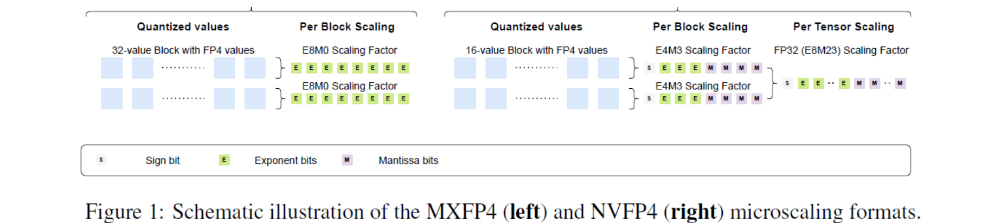
p.28 읽는 포인트: 원소의 E2M1 형식이 같아도 scale 형식과 블록 크기가 다르다. NVFP4는 블록당 16개 원소에 FP8 E4M3 scale을 붙이고, 텐서 전체 FP32 scale을 추가한다. 복원은 원소 FP4값 × 블록 scale × 전체 scale로 이해한다. NVIDIA NVFP4 공식 설명
| 비교축 | MXFP4 | NVFP4 |
|---|---|---|
| 원소 형식 | E2M1, 4비트 | E2M1, 4비트 |
| 블록 크기 | 32개 | 16개 |
| 블록 scale | E8M0, 8비트 | E4M3, 8비트 |
| scale 표현 | 2의 거듭제곱 | 가수부를 갖는 FP8 값 |
| 전체 scale | 여기서 비교하는 기본 형식에는 없음 | 텐서당 FP32 한 개 |
| metadata 포함 비트/원소 | 4 + 8/32 = 4.25 |
N개 원소 기준 4 + 8/16 + 32/N = 4.5 + 32/N |
| 선택 시 확인 | 형식·블록 배치·커널 지원 | 형식·두 단계 scale·커널 지원 |
교육용 보충 — 검산: N=1,024개라면 MXFP4는 1,024×4 + 32×8 = 4,352비트 = 544바이트다. NVFP4는 1,024×4 + 64×8 + 32 = 4,640비트 = 580바이트, 즉 원소당 4.53125비트다. 블록이 꽉 차며 추가 padding·헤더가 없다는 가정이다.
정정·주의: NVFP4를 MXFP4의 단순한 상위 버전으로만 이해하기보다 서로 다른 scale 설계로 구분한다. 더 작은 블록·세밀한 scale은 오차를 줄이는 데 도움이 될 수 있지만 metadata가 늘고, 장치 지원에 따라 성능이 달라진다. 특정 장치에서의 실제 지원은 배포 시점에 확인해야 한다.
3.5 양자화 설계 선택 지도 — p.29
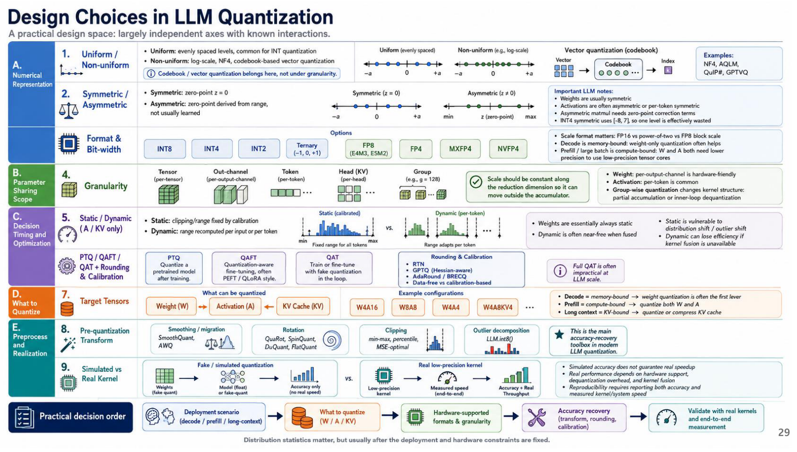
이 페이지는 이미지로 된 종합 지도다. 글을 한 줄씩 외우기보다 서로 독립적인 선택축을 구별한다. 예를 들어 “4비트”는 비트 수만 정할 뿐, 어떤 텐서를 양자화하는지와 scale을 공유하는 범위를 정하지 않는다.
| 설계축 | 질문 | 예시와 이후 학습 위치 |
|---|---|---|
| 표현 수준 | 대표값 간격은 같은가? | Uniform·non-uniform, 이 장과 4장 |
| 원점 | 실수 0을 어느 정수로 나타내는가? | 대칭·비대칭, 3.8절 |
| 형식·비트 수 | 어떤 비트 패턴을 쓰는가? | INT8, INT4, FP4, ternary |
| Granularity, 공유 범위 | 몇 개 값이 같은 scale을 쓰는가? | tensor·channel·token·head·group, 4장 |
| 결정 시점 | scale을 언제 구하는가? | static·dynamic, 4장 |
| 최적화 방식 | 학습 후 보정하는가, 양자화를 넣고 학습하는가? | PTQ·QAT·미세조정, 4–6장 |
| 대상 텐서 | 무엇을 줄이는가? | weight·activation·KV cache, 6장 |
| 사전 변환 | 분포를 어떻게 다듬는가? | smoothing·rotation·clipping·outlier 분리, 6장 |
| 실제 실행 | 시뮬레이션인가 실제 커널인가? | fake quant와 저정밀 커널, 5장 |
교육용 보충: W4A16은 가중치(weight) 4비트, 활성값(activation) 16비트라는 표기다. codebook/VQ는 대표값을 정하는 표현 방식이며, 그 자체가 scale 공유 범위인 granularity를 뜻하지 않는다. group-wise codebook처럼 두 축을 조합할 수 있다.
이 지도의 실무 흐름은 배포 상황·병목 확인 → 대상 텐서 결정 → 장치가 지원하는 형식과 granularity 선택 → 오차 복구 → 실제 커널로 검증이다. 통합 문서의 Canvas에서 이 흐름을 다시 확인한다. 원문의 decode·prefill 병목 표시는 대표적인 경향이며 batch와 문맥 길이에 따라 달라진다.
관련 절차는 양자화 흐름 Canvas와 미리보기에서도 확인할 수 있다.
3.6 균일·비균일 양자화 — p.30
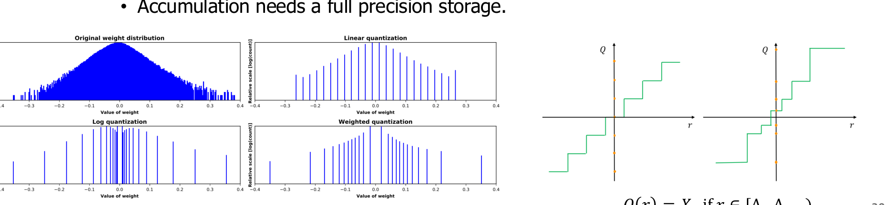
p.30 읽는 포인트: 아래 분포에서 대표값을 일정 간격으로 둘 때와 값이 많이 몰린 곳에 촘촘하게 둘 때를 비교한다. 오른쪽 log 그림은 크기가 커질수록 간격이 커지는 예다.
| 비교축 | Uniform / linear, 균일 양자화 | Non-uniform, 비균일 양자화 |
|---|---|---|
| 대표값 간격 | 공유 범위 안에서 일정 | 위치에 따라 다름 |
| 복원 예 | r̃=S(q−Z) |
codebook 조회, 지수값·조합값 복원 등 |
| 장점 | 정수 행렬곱·고정소수점 구현과 연결하기 쉬움 | 특정 분포에 대표값을 집중할 수 있음 |
| 한계 | outlier 때문에 작은 값 정밀도가 낮아질 수 있음 | lookup·복호화와 전용 커널 비용이 생길 수 있음 |
| 강의 예 | 대칭·비대칭 INT8 | Log, NF4, binary code, VQ |
**Logarithmic quantization(로그 양자화)**은 크기를 로그 축에서 나눠, 대표값을 대체로 2의 거듭제곱 등으로 두는 방식이다. 이런 수와의 곱셈은 일부 상황에서 shift로 바꿀 수 있지만, 누적과 부호·지수 처리 비용까지 사라지는 것은 아니다.
정정·주의: 슬라이드의 VGG-16 정확도 손실 수치는 인용 연구의 설정에서 나온 비교다. 모든 4비트 선형 양자화가 같은 정확도 손실을 낸다는 규칙으로 쓰지 않는다. 비균일 방식도 모델 분포와 커널이 맞아야 유리하다.
3.7 Scale·zero point·clipping과 복원 — p.31–34
3.7.1 먼저 완전한 양자화 식을 정의하기
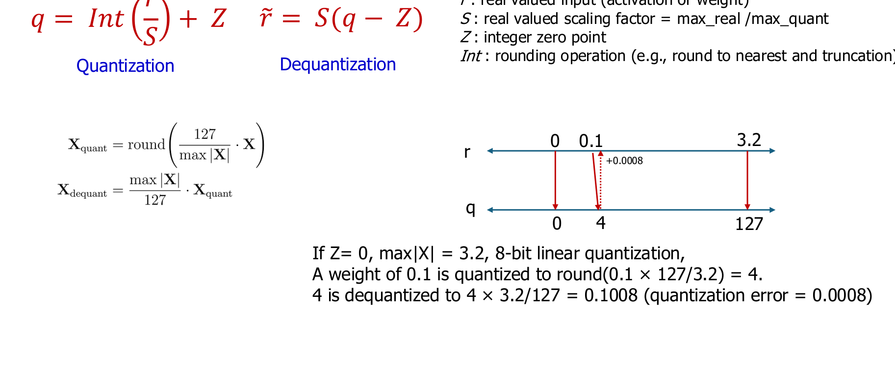
원본의 핵심을 clipping까지 포함해 쓰면 다음과 같다.
| 기호 | 뜻과 단위 |
|---|---|
| r | 원래 실수값. 가중치 또는 활성값과 같은 단위 |
| q | 저장하는 정수 코드. 무차원 |
| S>0 | scale, 정수 코드 한 칸에 대응하는 실수 간격. r와 같은 단위 |
| Z | zero point, 실수 0에 대응하는 정수 코드. 무차원 |
| r̃ | dequantization(역양자화)으로 복원한 근사 실수값 |
| q_min, q_max | 허용 정수 코드의 최솟값·최댓값 |
| round | 가까운 정수로 반올림. 정확히 중간인 값의 규칙은 구현에 맞춰 정함 |
| clip | 범위를 벗어난 코드를 가장 가까운 끝점으로 제한하는 연산 |
**Quantization error(양자화 오차)**를 e=r̃−r로 정의한다. clipping이 없고 nearest rounding이면 보통 절댓값 오차는 S/2 이하다. 범위를 넘어 잘린 값에는 이 보장이 없다. 역양자화는 원래 정보를 되찾는 역함수가 아니라 저장된 코드를 근사 실수로 해석하는 과정이다.
p.31 검산: max|r|=3.2, 대칭 INT8 범위 −127~127, Z=0이면 S=3.2/127≈0.02519685다. r=0.1은 q=round(3.96875)=4, r̃≈0.10078740, e≈0.00078740이다. 원본의 0.1008·0.0008은 이를 반올림한 수치다.
3.7.2 정수 패턴과 실수를 혼동하지 않기
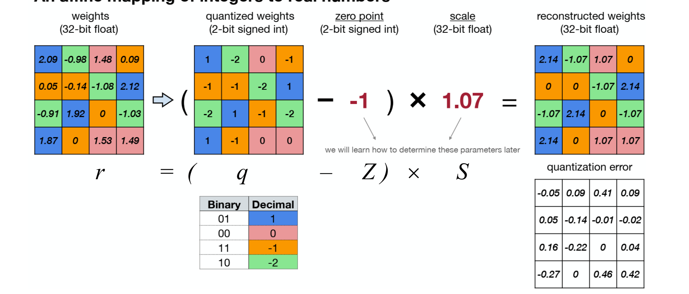
p.32 읽는 포인트: 같은 이진 코드가 곧 원래 실수는 아니다. 정수 행렬에서 zero point를 빼고 scale을 곱하는 두 단계를 추적한다. scale과 zero point가 다르면 같은 정수 q도 서로 다른 실수로 복원된다.
3.7.3 비대칭 범위에서 파라미터 구하기
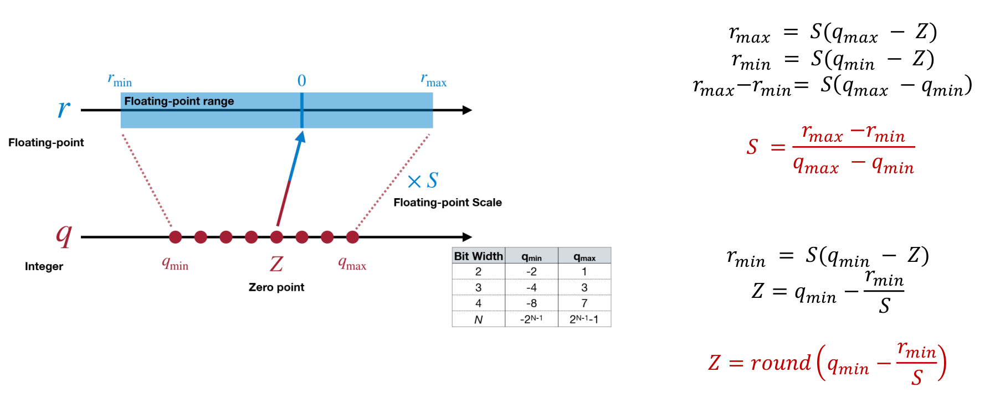
실수 범위의 최솟값 r_min, 최댓값 r_max를 정수 범위에 대응시키는 기본 식은 다음과 같다.
p.33 읽는 포인트: 양 끝점을 빼서 zero point를 소거하면 scale 식이 나온다. 이후 한쪽 끝점 식을 사용해 Z를 구한다. Z를 정수로 반올림하기 때문에 두 실수 끝점이 모두 정확히 표현되지는 않을 수 있다. 일반적인 구현에서는 범위에 0을 포함시키며, r_min=r_max인 상수 텐서는 S가 0이 되지 않도록 별도 처리한다.
3.7.4 비대칭 예제와 원본의 반올림 주의
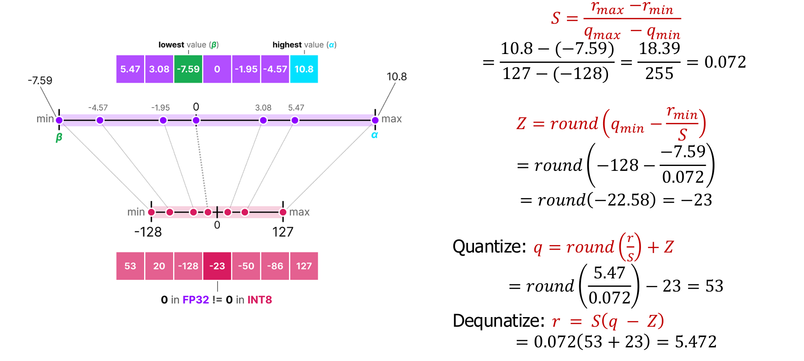
강의 해설: r_min=−7.59, r_max=10.8, signed INT8 코드 범위 −128~127, 입력 r=5.47의 예다. 작은 중간값을 너무 일찍 반올림하면 최종 결과가 달라질 수 있으므로 두 계산을 구분한다.
| 단계 | 원본의 단순화된 scale 사용 | 더 긴 정밀도로 검산 |
|---|---|---|
| S | 0.072 | 18.39/255 = 0.072117647… |
| Z | −23 | round(−128+7.59/S)=−23 |
| q | round(5.47/0.072)−23=53 |
round(5.47/S)−23=53 |
| r̃ | 0.072×76=5.472 |
S×76≈5.480941176 |
| e=r̃−r | +0.002 | 약 +0.010941176 |
정정·주의: 5.472는 슬라이드에서 표시한 근사 scale 0.072를 그대로 사용했을 때의 값이다. 정확한 비율 S를 쓴 계산의 결과라고 소개하면 안 된다. 양자화 구현은 표시용 소수 자릿수보다 높은 정밀도의 scale을 저장할 수 있다.
3.8 양자화된 행렬곱과 대칭·비대칭 — p.35–37
3.8.1 정수 곱셈을 해도 누적은 넓은 비트가 필요하다
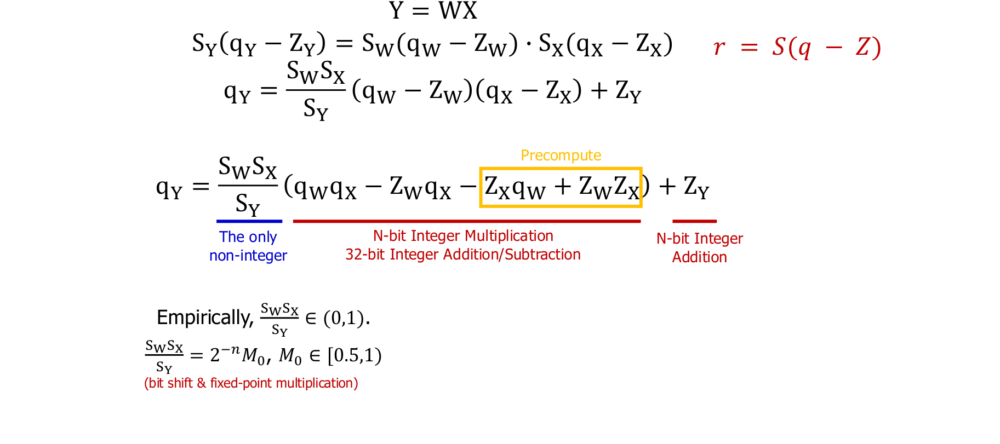
교육용 보충 — 차원을 명시한 식: 이 절은 열 방향 입력 표기 Y=WX를 사용한다. W∈R^(m×k)는 가중치, X∈R^(k×n)는 n개 입력, Y∈R^(m×n)는 출력이다. 각 텐서가 하나의 scale과 zero point를 공유한다고 가정한다. i는 출력 행, j는 입력 열, t는 내적의 합산 축이다.
S_W,S_X,S_Y는 각 텐서의 scale, Z_W,Z_X,Z_Y는 zero point다. 실제 실수 단위가 있는 문제라면 Y의 단위는 W×X이며, 재양자화 배율 S_W S_X/S_Y는 무차원이다.
p.35 읽는 포인트: 저비트 정수 곱을 INT32처럼 더 넓은 누산기에 모으고, 마지막에 출력 scale로 다시 변환한다. **Accumulator(누산기)**는 여러 곱의 합을 보관하는 공간이고, **requantization(재양자화)**은 이 합을 출력 정수 범위로 맞추는 과정이다. 긴 내적은 작은 값의 합이어도 overflow(범위 초과)가 날 수 있다.
zero point 보정은 내적을 전개하면 더 분명하다.
정정·주의: 슬라이드의 축약된 +Z_W Z_X 항을 내적 전체에 적용하면 합산 길이 k가 필요하다. 가중치 쪽 합과 일부 보정은 미리 구할 수 있지만, 입력이 달라지면 입력 의존 항은 달라진다. 고정소수점 multiplier와 shift로 재양자화 배율을 근사할 수 있다. 이 배율이 항상 0~1이라는 수학적 보장은 없으므로 커널의 실제 지원 범위를 확인해야 한다.
검산 예제: q_W=[2,4], q_X=[3,1], Z_W=Z_X=0, S_W=0.5, S_X=0.25이면 정수 내적은 10이고 실수 출력은 10×0.5×0.25=1.25다. S_Y=0.125, Z_Y=0이면 출력 코드는 10이다. 원래 실수 벡터 [1,2]와 [0.75,0.25]의 내적도 1.25다.
3.8.2 대칭과 비대칭의 선택
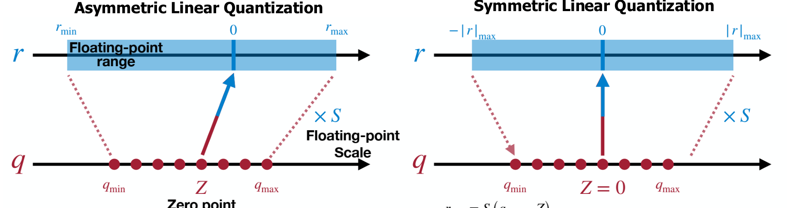
p.36 읽는 포인트: 비대칭은 실수 범위를 정수 범위에 밀어 넣고, 대칭은 0을 중심으로 양쪽을 배치한다. 양수로 치우친 분포에서는 대칭 표현의 음수 쪽 코드가 덜 쓰일 수 있다.
| 비교축 | Symmetric, 대칭 | Asymmetric, 비대칭 |
|---|---|---|
| zero point | 보통 Z=0 | 범위에 맞게 정수 Z를 선택 |
| scale 예 | max(abs(r))/127 (INT8 −127~127 정책) |
(r_max−r_min)/255 (INT8 전체 범위) |
| 장점 | zero point 보정이 단순함 | 치우친 범위를 더 고르게 활용할 수 있음 |
| 한계 | 치우친 분포에서 일부 코드 낭비 | 보정·구현 복잡도가 늘 수 있음 |
| 자주 보는 적용 | 부호가 양쪽에 있는 가중치 | 치우친 활성값 등의 후보 |
교육용 보충: signed INT8의 실제 코드 범위는 −128~127로 한쪽에 코드가 하나 더 있다. 대칭 구현은 −127~127을 써서 −128을 쓰지 않기도 한다. INT4도 −8~7 중 −7~7을 쓸 수 있다. “대칭”이라는 이름만 보고 코드 범위·반올림 정책을 추정하지 말고 확인한다.
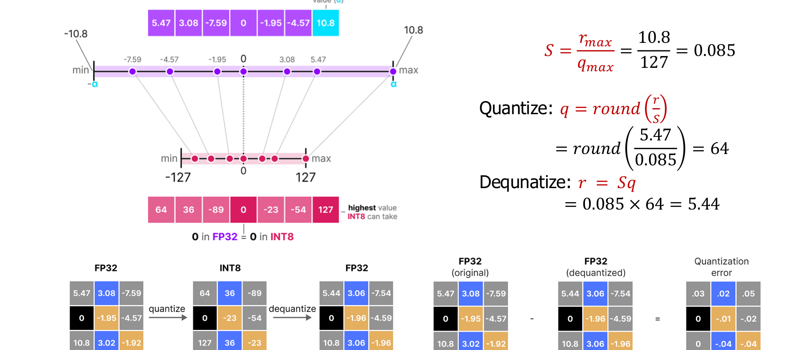
p.37 검산: 앞 예의 max|r|=10.8을 사용하면 S=10.8/127≈0.08503937, q=round(5.47/S)=64, r̃≈5.44251969이고 오차는 약 −0.02748031이다. 원본의 5.44는 scale을 0.085로 먼저 근사한 값이다. 앞의 단일 값에서 비대칭이 오차가 작았다고 해서 전체 분포·모든 입력에서도 항상 우수한 것은 아니다.
3.9 Q/DQ와 fusion: 비트 수가 속도를 보장하지 않는 이유 — p.38
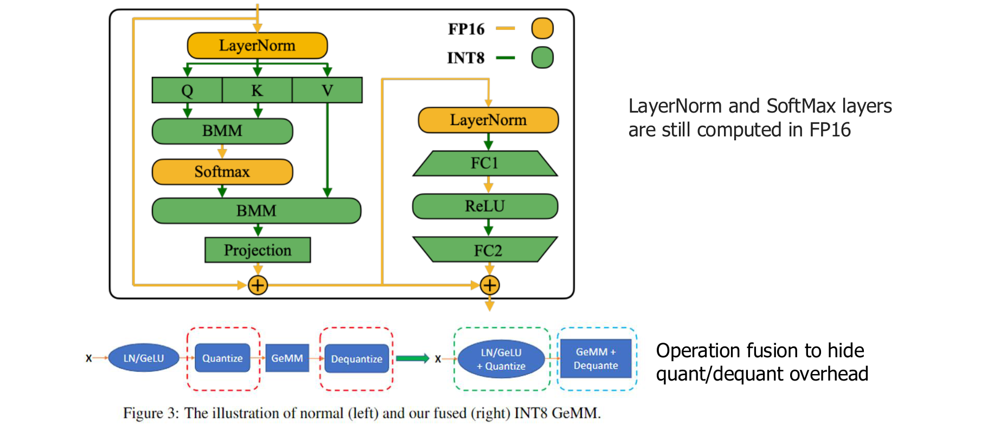
강의 해설: Q는 실수를 정수 코드로 바꾸는 quantize, DQ는 정수 코드를 계산 가능한 실수로 해석하는 dequantize다. 모든 연산이 저정밀 커널로 실행되지 않으면, FP16 영역과 정수 영역 사이에서 변환·메모리 쓰기·다시 읽기가 반복될 수 있다.
p.38 읽는 포인트: LayerNorm·Softmax 같은 연산이 FP16에 남아 있는 예에서 어느 지점에 Q/DQ가 들어가는지 본다. 아래 fusion(연산 융합) 그림은 여러 단계를 한 커널 안에서 처리해 중간 텐서 저장과 실행 호출을 줄이는 방법이다.
| 구현 상황 | 기대할 수 있는 효과 | 반드시 확인할 항목 |
|---|---|---|
| 가중치만 압축 저장 | 파일 크기·메모리 전송 감소 | 복호화 비용, batch=1 decode 지연 |
| W/A 저정밀 행렬곱 지원 | 행렬곱 계산량 처리 개선 가능 | 실제 커널 사용 여부, 누적 정밀도 |
| Q/DQ가 분리되어 반복 실행 | 변환·버퍼 비용이 이득을 상쇄할 수 있음 | profiler의 변환·복사 시간 |
| Q/DQ와 행렬곱 등을 fusion | 중간 접근과 호출 감소 가능 | backend의 fusion 가능 패턴 |
정정·주의: 슬라이드의 FP16 LayerNorm·Softmax는 해당 구현 예다. 모든 양자화 모델의 영구적 규칙은 아니다. 정확도 시뮬레이션에서 4비트로 보인다는 사실과 실제 하드웨어가 4비트로 곱셈한다는 사실도 구분한다.
3.10 장 요약과 흔한 오해
양자화는 대표값·scale·zero point·공유 범위·변환 비용을 함께 설계하는 문제다. 비트 수만 줄이면 메모리는 줄일 수 있지만, 정확도와 지연시간은 분포·배포 커널에 달려 있다. 선형 양자화는 q=clip(round(r/S)+Z)와 r̃=S(q−Z) 두 식에서 시작한다.
| 흔한 오해 | 바르게 이해하기 |
|---|---|
| INT4면 모든 원소가 정확히 4비트만 차지한다 | scale·zero point·padding까지 포함한 effective bits/value를 계산해야 함 |
| 역양자화하면 원래 값으로 돌아간다 | 여러 원래 값이 같은 코드가 되므로 손실 정보는 복구되지 않음 |
| 범위가 넓은 형식이 항상 정확하다 | 동적 범위와 근처 수를 구별하는 정밀도는 다른 성질 |
| 저비트 곱셈이면 누산기도 저비트다 | 내적의 합은 더 넓은 누산기를 필요로 함 |
| Q/DQ는 공짜다 | fusion과 메모리 접근에 따라 실제 비용이 달라짐 |
3.11 복습 질문과 해설
- S=0.1, Z=3, 정수 범위 0~15일 때 r=0.26과 r=2.0을 양자화·복원하라.
- r=0.26은
q=round(2.6)+3=6,r̃=0.1×(6−3)=0.3, 오차 +0.04다. r=2.0은 clipping 전 q=23이지만 15로 잘려r̃=1.2, 오차 −0.8이다. 범위를 벗어나면 오차가 S/2 이하라는 보장이 사라진다.
- r=0.26은
- MXFP4를 왜 정확히 원소당 4비트라고 할 수 없는가?
- 32개마다 8비트 scale이 있어 payload만 평균 4.25비트다. 그 외 파일 metadata는 별도다.
- W4A16은 INT4 정수 행렬곱을 뜻하는가?
- 아니다. 가중치 저장 정밀도와 활성값 정밀도의 표기다. 구현에 따라 가중치를 복호화해 고정밀 곱셈을 할 수도 있다.
- 대칭 양자화의 Z=0은 어떤 계산을 줄여 주는가?
- zero point가 0인 쪽의 내적 보정항을 없앤다. 양쪽 모두 0이면 순수 정수 내적으로 단순해진다.
- scale을 일찍 반올림하면 왜 검산이 달라지는가?
- 반올림 경계와 복원 간격 자체가 달라진다. 표시용 scale과 실제 계산에 쓰는 scale을 분리해야 한다.
다음 4장에서는 같은 비트 예산에서 어떤 대표값과 범위·반올림·공유 단위를 선택해야 오차가 줄어드는지 살펴본다. QAT의 학습 과정은 5장에서 다룬다.
3.12 집필 자체 점검
- p.24–38 15개 페이지의 이미지와 읽는 포인트를 포함했다.
- FP/INT, MX/NV, uniform/non-uniform, symmetric/asymmetric 비교표를 작성했다.
- clipping, zero point, scale, 단위, 상수 텐서·반올림 정책을 설명했다.
- p.31·34·37 수치를 검산하고 근사 수치 차이를 명시했다.
- 내적의 zero-point 보정항과 누산기·재양자화 비용을 설명했다.
- 장 요약, 오해, 복습 정답, 다음 장 연결을 포함했다.
기준 본문은 기존 Markdown입니다. 수식·도표는 온라인 렌더러를 사용하며, 원문과 도표 원문으로도 확인할 수 있습니다.